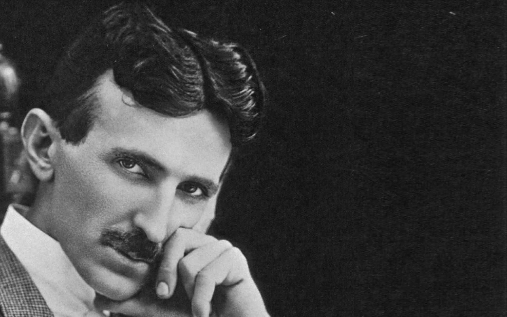
Nikola Tesla
Nikola Tesla grips his hat in his hand. He points his cane toward Niagara Falls and beckons bystanders to turn their gaze to the future. This bronze Tesla — a statue on the Canadian side — stands atop an induction motor, the type of engine that drove the first hydroelectric power plant.
Tesla is perhaps best known for his eccentric genius. He once proposed a system of towers that he believed could pull energy from the environment and transmit signals and electricity around the world, wirelessly. But his theories were unsound, and the project was never completed. He also claimed he had invented a “death ray.”
In recent years, Tesla’s mystique has begun to eclipse his inventions. San Diego Comic-Con attendees dress in Tesla costumes. The world’s most famous electric car bears his name. The American Physical Society even has a Tesla comic book (where, as in real life, he faces off against the dastardly Thomas Edison).
While his work was truly genius, much of his wizardly reputation was of his own making. Tesla claimed to have accidentally caused an earthquake in New York City using a small steam-powered electric generator he’d invented — MythBustersdebunked that idea. And Tesla didn’t actually discover alternating current, as everyone thinks. It was around for decades. But his ceaseless theories, inventions and patents made Tesla a household name, rare for scientists a century ago. And even today, his legacy still turns the lights on.
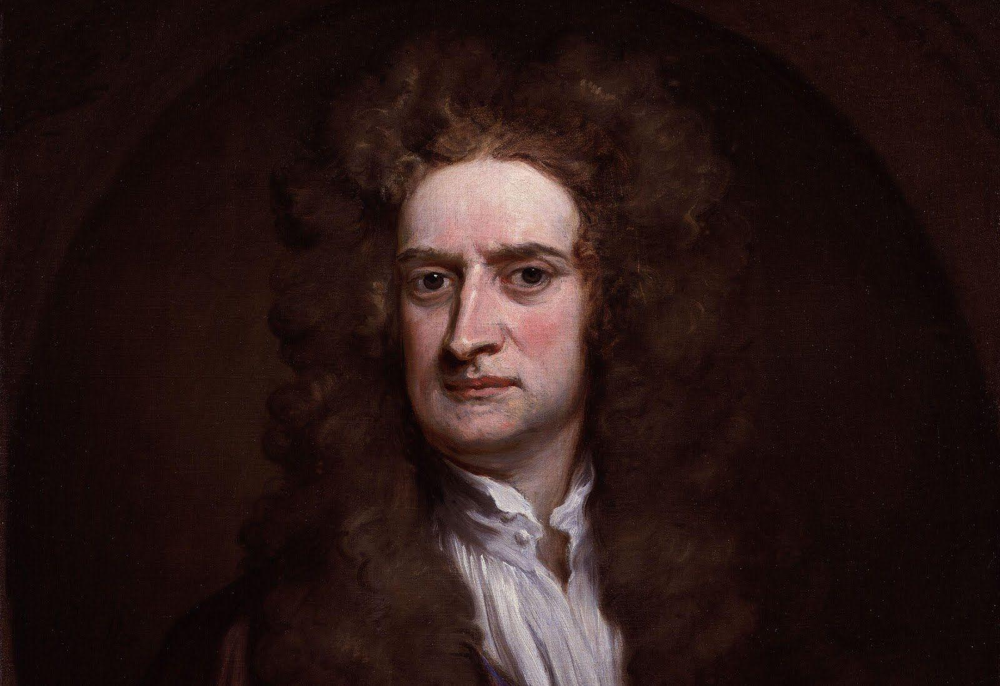
Isaac Newton
Isaac Newton was born on Christmas Day, 1642. Never the humble sort, he would have found the date apt: The gift to humanity and science had arrived. A sickly infant, his mere survival was an achievement. Just 23 years later, with his alma mater Cambridge University and much of England closed due to plague, Newton discovered the laws that now bear his name. (He had to invent a new kind of math along the way: calculus.) The introverted English scholar held off on publishing those findings for decades, though, and it took the Herculean efforts of friend and comet discoverer Edmund Halley to get Newton to publish. The only reason Halley knew of Newton’s work? A bet the former had with other scientists on the nature of planetary orbits. When Halley mentioned the orbital problem to him,
Newton shocked his friend by giving the answer immediately, having long ago worked it out.
Halley persuaded Newton to publish his calculations, and the results were the Philosophiæ Naturalis Principia Mathematica, or just the Principia, in 1687. Not only did it describe for the first time how the planets moved through space and how projectiles on Earth traveled through the air; the Principia showed that the same fundamental force, gravity, governs both. Newton united the heavens and the Earth with his laws.
Thanks to him, scientists believed they had a chance of unlocking the universe’s secrets.
He famously feuded with German scientist Gottfried Leibnitz, mainly over who invented calculus first, creating a schism in European mathematics that lasted over a century. Newton also made it his life’s work to torment English scientist Robert Hooke, destroying the legacy of a man once considered London’s Leonardo da Vinci.
How fitting that the unit of force is named after stubborn, persistent, amazing Newton, himself a force of nature. — Bill Andrews
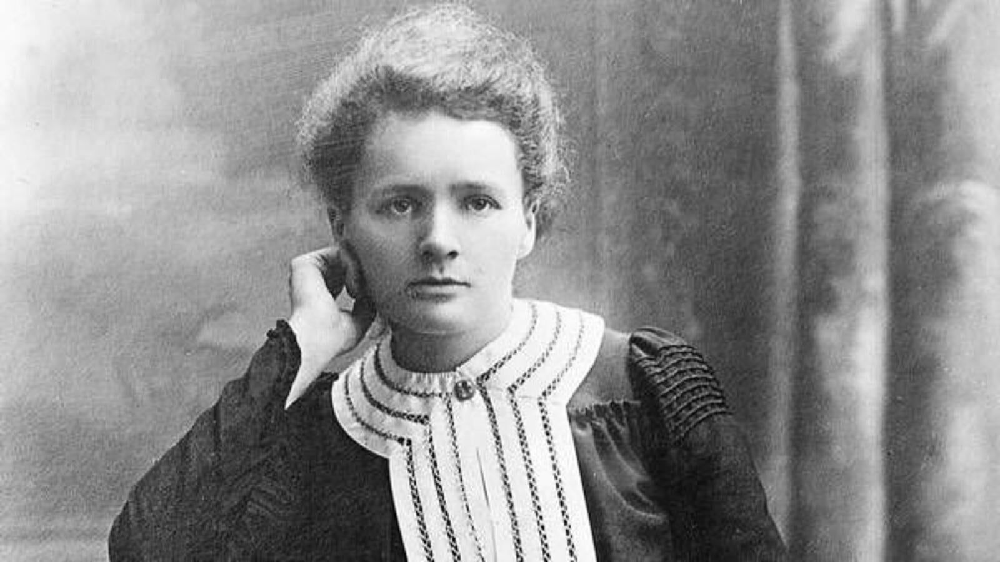
Marie Curie
Marie Curie was a physicist, chemist and a pioneer in the study of radiation. She and her husband, Pierre, discovered the elements polonium and radium. They and Henri Becquerel were awarded the Nobel Prize in Physics in 1903, and Marie received the Nobel Prize in Chemistry in 1911. She worked extensively with radium throughout her lifetime, characterizing its various properties and investigating its therapeutic potential. However, her work with radioactive materials was what ultimately killed her. She died of a blood disease in 1934.
As her research into radioactivity intensified, Curie's labs became inadequate. The Austrian government seized the opportunity to recruit Curie, and offered to create a cutting edge lab for her, according to Goldsmith. Curie negotiated with the Pasteur Institute to build a radioactivity research lab. By July of 1914, the Radium Institute ("Institut du Radium," at the Pasteur Institute, now the Curie Institute) was almost complete. When World War I broke out in 1914, Curie suspended her research and organized a fleet of mobile X-ray machines for doctors on the front.
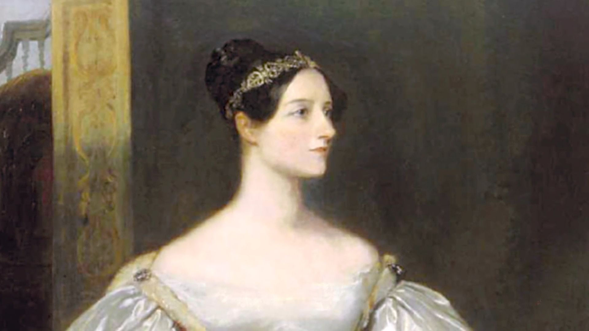
Ada Lovelace
To say she was ahead of her time would be an understatement. Ada Lovelace earned her place in history as the first computer programmer — a full century before today’s computers emerged.
It was mathematical obsession at first sight. The two struck up a working relationship and eventual close friendship that would last until Lovelace’s death in 1852, when she was only 36. Babbage abandoned his Difference Engine to brainstorm a new Analytical Engine — in theory, capable of more complex number crunching — but it was Lovelace who saw that engine’s true potential.
The Analytical Engine was more than a calculator — its intricate mechanisms and the fact that the user fed it commands via a punch card meant the engine could perform nearly any mathematical task ordered. Lovelace even wrote instructions for solving a complex math problem, should the machine ever see the light of day. Many historians would later deem those instructions the first computer program, and Lovelace the first programmer. While she led a raucous life of gambling and scandal, it’s her work in “poetical science,” as she called it, that defines her legacy.
In the words of Babbage himself, Lovelace was an “enchantress who has thrown her magical spell around the most abstract of Sciences and has grasped it with a force which few masculine intellects. . . could have exerted over it.” — L.S.
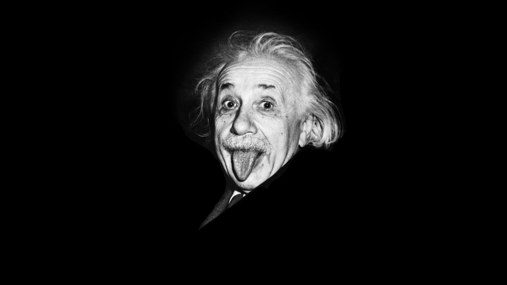
Albert Einstein
Einstein expanded on relativity in 1916 with his theory of gravitation: general relativity. It holds that anything with mass distorts the fabric of space and time, just as a bowling ball placed on a bed causes the mattress to sag. During a solar eclipse in 1919, astronomers showed that the sun’s mass did indeed bend the path of starlight. (The temporary darkness around the sun enabled astronomers to chronicle the bending.) The validation made Einstein a superstar.
Two years later, Einstein won the Nobel Prize in Physics, not for general relativity, but for his discovery of the photoelectric effect. By this time, the 42-year-old physicist had made most of his major contributions to science.
In 1933, Einstein accepted a professorship at the Institute for Advanced Study in Princeton, N.J., where for years he tried (unsuccessfully) to unify the laws of physics. He became a U.S. citizen in 1940, and his fame grew as a public intellectual, civil rights supporter and pacifist.
Many consider Einstein’s theory of general relativity to be his crowning achievement. The theory predicted both black holes and gravitational waves — and just last year, physicists measured the waves created by the collision of two black holes over a billion light-years away. During their epic journey across the cosmos, the ripples played with space and time like a fun-house mirror contorting faces.
General relativity also is the bedrock of gravitational lensing, which uses the gravity of stars and galaxies as a giant magnifying glass to zoom in on farther cosmic objects. Astronomers may soon take advantage of such physics to see geographic details of worlds light-years away.
Einstein, who died of heart failure in 1955, would have applauded such bold, imaginative thinking. His greatest insights came not from careful experimental analysis, but simply considering what would happen under certain circumstances, and letting his mind play with the possibilities. “I am enough of an artist to draw freely upon my imagination,” he said in a Saturday Evening Post interview. “Knowledge is limited. Imagination encircles the world.” — Mark Barna
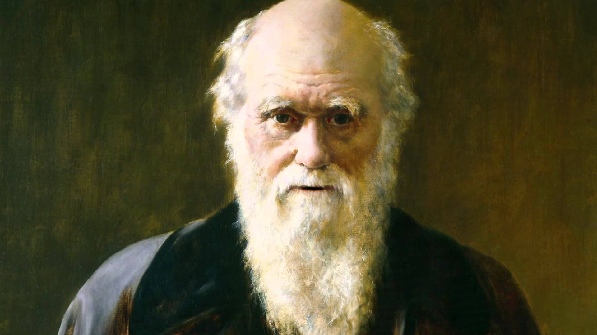
Charles darwin
Charles Darwin would not have been anyone’s first guess for a revolutionary scientist.
Darwin’s observations implied a completely different process. He noticed small differences between members of the same species that seemed to depend upon where they lived. The finches of the Galapagos are the best-known example: From island to island, finches of the same species possessed differently shaped beaks, each adapted to the unique sources of food available on each island.
This suggested not only that species could change — already a divisive concept back then — but also that the changes were driven purely by environmental factors, instead of divine intervention. Today, we call this natural selection.
All of his observations and musings eventually coalesced into the tour de force that was On the Origin of Species, published in 1859 when Darwin was 50 years old. The 500-page book sold out immediately, and Darwin would go on to produce six editions, each time adding to and refining his arguments.
In non-technical language, the book laid out a simple argument for how the wide array of Earth’s species came to be. It was based on two ideas: that species can change gradually over time, and that all species face difficulties brought on by their surroundings. From these basic observations, it stands to reason that those species best adapted to their environments will survive and those that fall short will die out.
.jpg)
Leonardo Da Vinci
Leonardo da Vinci was a Renaissance painter, sculptor, architect, inventor, military engineer and draftsman — the epitome of a true Renaissance man. Gifted with a curious mind and a brilliant intellect, da Vinci studied the laws of science and nature, which greatly informed his work.
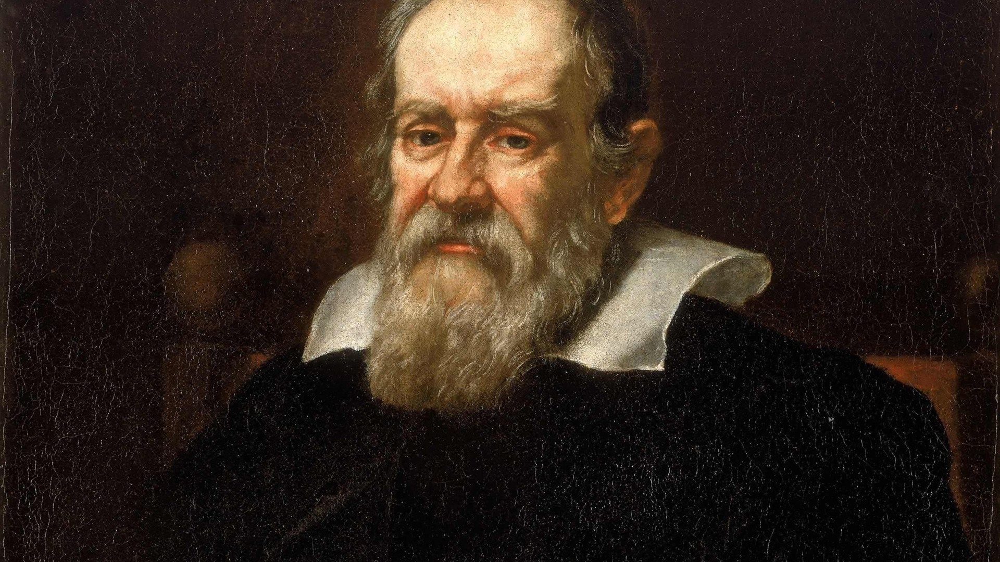
Galileo Galilei
Around Dec. 1, 1609, Italian mathematician Galileo Galilei pointed a telescope at the moon and created modern astronomy. His subsequent observations turned up four satellites — massive moons — orbiting Jupiter, and showed that the Milky Way’s murky light shines from many dim stars. Galileo also found sunspots upon the surface of our star and discovered the phases of Venus, which confirmed that the planet circles the sun inside Earth’s own orbit.
“I give infinite thanks to God, who has been pleased to make me the first observer of marvelous things,” he wrote.
The 45-year-old Galileo didn’t invent the telescope, and he wasn’t the first to point one at the sky. But his conclusions changed history. Galileo knew he’d found proof for the theories of Polish astronomer Nicolaus Copernicus (1473-1543), who had launched the Scientific Revolution with his sun-centered solar system model.
But all this heavenly motion contradicted Roman Catholic doctrine, which was based on Aristotle’s incorrect views of the cosmos. The church declared the sun-centered model heretical, and an inquisition in 1616 ordered Galileo to stop promoting these views. The real blow from religious officials came in 1633, after Galileo published a comparison of the Copernican (sun-centered) and Ptolemaic (Earth-centered) systems that made the latter’s believers look foolish. They placed him under house arrest until his death in 1642, the same year Isaac Newton was born.
The English mathematician would build on Galileo’s law of inertia as he compiled a set of laws so complete that engineers still use them centuries later to navigate spacecraft across the solar system — including NASA’s Galileo mission to Jupiter. — E.B.
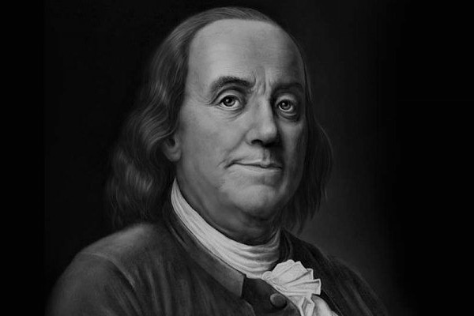
Benjamin Franklin
Benjamin Franklin was many things in his lifetime: a printer, a postmaster, an ambassador, an author, a scientist, a Founding Father. Above all, he was an inventor, creating solutions to common problems, innovating new technology, and even making life a little more musical.
Here are some of Benjamin Franklin’s most significant inventions:
1. Lightning rod
2. Bifocals
3. Swim fins
4. Franklin Stove
5. Urinary catheter
6. Armonica
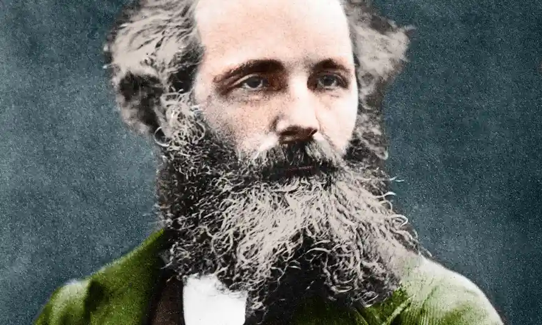
James Clerk Maxwell
James Clerk Maxwell FRSE FRS was a Scottish mathematician and scientist responsible for the classical theory of electromagnetic radiation describing electricity, magnetism and light as different manifestations of the same phenomenon for the first time. .
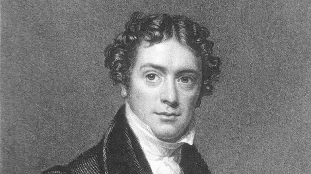
Michael Faraday
Best known for his work on electricity and electrochemistry, Faraday proposed the laws of electrolysis. He also discovered benzene and other hydrocarbons. As a young man in London, Michael Faraday attended science lectures by the great Sir Humphry Davy.
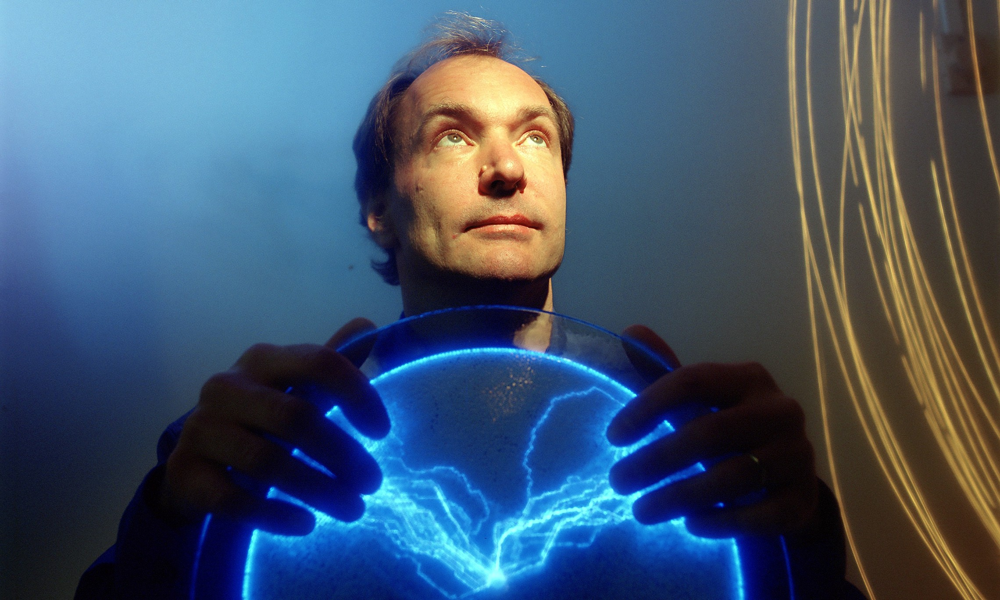
Tim Berners-Lee
In 1989, Tim Berners-Lee invented the World Wide Web, an Internet-based hypermedia initiative for global information sharing while at CERN, the European Particle Physics Laboratory. He wrote the first web client and server in 1990. His specifications of URIs, HTTP and HTML were refined as web technology spread.

{kind=link}
{kind=link}
{kind=link}
{kind=link}
{kind=link}
{kind=link}
{kind=link}
{kind=link}
{kind=link}
{kind=link}
{kind=link}